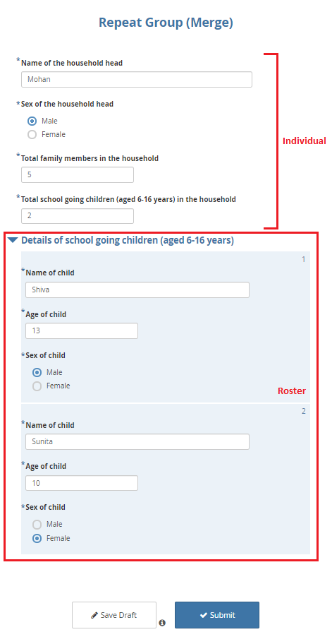
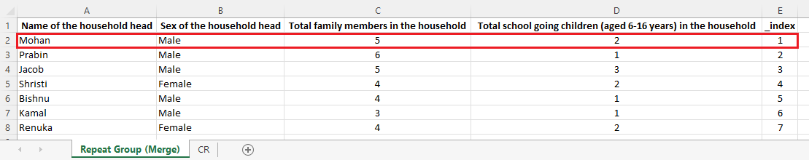
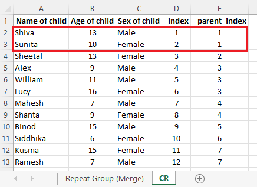

Search the knowledge base, browse our resources, and visit our forum for more detailed information
Read in English | Leer en español | اقرأ باللغة العربية Dernière mise à jour : 6 avr. 2022
Comme illustré dans l’article d’aide, Regrouper des questions et groupes répétés, vous pouvez utiliser des groupes répétés pour répondre à certaines exigences d’enquête. Vous pourriez également avoir besoin d’analyser les données des groupes répétés qui ont été collectées. Lorsque vous téléchargez les données depuis le serveur (au format XLS), vous devriez voir les données dans la structure suivante :
La première feuille avec le nom de feuille Repeat Group (Merge) visible dans l’image ci-dessus contient les données individuelles de l’enquête tandis que la deuxième feuille avec le nom de feuille CR contient les données de liste.
Pour les jeux de données téléchargés, vous devriez avoir une feuille de plus que le nombre de groupes répétés. Par exemple, si vous aviez un groupe répété inclus dans le formulaire d'enquête, vous devriez avoir deux feuilles dans votre jeu de données.
Cet article d’aide illustrera également la différence entre les données individuelles et les données de liste. Il montrera ensuite les étapes pour les fusionner en un seul jeu de données via Power Query dans Excel.
La fusion des données individuelles et des données de liste via le système n’est actuellement pas disponible mais elle est possible via Power Query dans Excel. Excel a été choisi plutôt que d’autres logiciels car c’est un tableur largement utilisé et disponible sur presque tous les PC. Il est également relativement facile à utiliser.
Les données individuelles sont des informations qui sont généralement capturées une seule fois dans un entretien. Les données de liste, en revanche, sont capturées plus d’une fois (par exemple, les détails de tous les membres de la famille vivant dans un ménage) auprès du même individu dans un entretien. Le nombre de cas dans les données individuelles peut être égal aux données de liste mais ne peut jamais les dépasser, tandis que le nombre de cas dans les données de liste dépasse généralement les données individuelles mais peut parfois être égal (mais jamais inférieur).
Un formulaire d’enquête rempli, comme montré ci-dessous, devrait illustrer en image les différences entre les données individuelles et les données de liste. Veuillez noter que toutes les données utilisées dans cet article d’aide sont hypothétiques.

Toute donnée collectée en dehors du groupe répété est une donnée individuelle et toute donnée collectée à l'intérieur d'un groupe répété est une donnée de liste.
Les données téléchargées au format XLS devraient également montrer la différence entre les données individuelles et les données de liste.
Chaque enregistrement (comme montré dans l’image ci-dessous), sous Name of the household head,
Sex of the household head, Total family members in the household, et
Total school going children (aged 6-16 years) in the household de la première
feuille Repeat Group (Merge) est une donnée individuelle.

Cet exemple de jeu de données a un total de 7 entretiens comme données individuelles.
De même, chaque enregistrement (comme montré dans l’image ci-dessous), sous Name of child,
Age of child, et Sex of child de la deuxième feuille, CR, est une donnée
de liste.

Donc, cet exemple de jeu de données a un total de 12 enregistrements comme données de liste.
Remarque : Lors du téléchargement d'un jeu de données depuis le serveur, vous devriez également pouvoir voir d'autres variables (variables de métadonnées) si elles n'ont pas été filtrées. Elles ont été supprimées de cet exemple de jeu de données pour plus de simplicité.
Si vous regardez attentivement les images partagées ci-dessus, vous pouvez voir la colonne _index avec
la valeur « 1 » dans la première feuille Repeat Group (Merge). De même, il y a aussi
une colonne _parent_index avec la valeur « 1 » dans la deuxième feuille CR. _index et
_parent_index sont des variables supplémentaires créées par le système pour gérer les groupes répétés. Ce sont les variables de correspondance nécessaires pour fusionner les données individuelles et
les données de liste ensemble en un seul jeu.
Voici deux approches pour fusionner les données individuelles et les données de liste en un seul jeu de données via Power Query dans Excel. Vous pouvez utiliser l’une des approches suivantes :
Pour la première approche, vous devez avoir ouvert votre jeu de données XLS. Pour plus de détails, veuillez consulter la vidéo ci-dessous :
Ouvrez le jeu de données qui contient à la fois les données individuelles et les données de liste.
Sélectionnez toutes les données de la première feuille (données individuelles).
Sous l’onglet Données, sélectionnez À partir d’un tableau/d’une plage.
Une boîte de dialogue (Créer un tableau) apparaîtra. Sélectionnez OK.
Sélectionnez l’icône Fermer et charger qui se trouve dans le coin supérieur gauche de l’écran. Vous devriez maintenant voir deux options déroulantes : Fermer et charger et Fermer et charger vers….
Sélectionnez Fermer et charger vers….
Une boîte de dialogue (Importer des données) apparaîtra. Sélectionnez Créer uniquement une connexion puis appuyez sur OK.
Vous avez maintenant créé une table de requête pour les (données individuelles).
Vous pouvez maintenant aller à la deuxième feuille, (données de liste), et suivre exactement les mêmes étapes que vous avez effectuées ci-dessus.
Avec cela, vous avez créé une table de requête pour les (données de liste).
Sous l’onglet Données, sélectionnez Obtenir des données. De là, sélectionnez Combiner des requêtes puis Fusionner.
Une boîte de dialogue Fusionner apparaît.
Chargez les deux tables de requête. Une fois les deux tables chargées, sélectionnez la
variable de correspondance _index de la première table. De même, sélectionnez la
variable de correspondance _parent_index de la deuxième table. Dès que vous
sélectionnez les deux variables de correspondance, vous devriez pouvoir voir La sélection
correspond à … des … lignes de la première table. La table de requête devrait maintenant être
fusionnée.
Pour développer la table fusionnée, cochez toutes les variables que vous souhaitez avoir dans le jeu de données fusionné. Vous pouvez également décocher Utiliser le nom de colonne d’origine comme préfixe pour avoir le nom de variable d’origine dans le jeu de données fusionné. Lorsque tout est terminé, sélectionnez OK.
Vous devriez maintenant avoir le jeu de données fusionné final.
Une fois de plus, sélectionnez l’icône Fermer et charger qui se trouve dans le coin supérieur gauche de l’écran. Vous devriez voir deux options déroulantes : Fermer et charger et Fermer et charger vers….
Sélectionnez Fermer et charger. Avec ce dernier clic, vous avez fusionné vos données individuelles et vos données de liste en un seul jeu de données.
Utilisez la deuxième approche lorsque vous n’avez pas encore ouvert votre jeu de données XLS et que vous avez seulement ouvert un nouveau classeur Excel. Pour plus de détails, veuillez consulter la vidéo ci-dessous :
Ouvrez un nouveau classeur Excel.
Sous l’onglet Données, sélectionnez Obtenir des données. De là, sélectionnez À partir d’un fichier puis À partir d’un classeur.
Recherchez le fichier sur votre PC. Une fois que vous le voyez, sélectionnez le fichier puis appuyez sur Importer.
Une boîte de dialogue Navigateur apparaît. Ici, cochez Sélectionner plusieurs éléments et les noms de feuilles CR et Repeat Group (Merge) qui sont visibles. Une fois qu’ils sont cochés, le bouton Charger en bas de la boîte de dialogue s’active.
Sélectionnez le bouton Charger. Vous devriez voir deux options déroulantes : Charger et Charger vers…. Sélectionnez Charger.
Avec cela, vous avez créé des tables de requête pour les (données individuelles) et les (données de liste).
Sous l’onglet Données, sélectionnez Obtenir des données. De là, sélectionnez Combiner des requêtes puis sélectionnez Fusionner.
Une boîte de dialogue Fusionner apparaît.
Chargez les deux tables de requête. Une fois les deux tables chargées, sélectionnez la
variable de correspondance _index de la première table. De même, sélectionnez la
variable de correspondance _parent_index de la deuxième table. Dès que vous
sélectionnez les deux variables de correspondance, vous devriez pouvoir voir La sélection
correspond à … des … lignes de la première table. La table de requête devrait maintenant être
fusionnée.
Pour développer la table fusionnée, cochez toutes les variables que vous souhaitez avoir dans le jeu de données fusionné. Vous pouvez également décocher Utiliser le nom de colonne d’origine comme préfixe pour avoir le nom de variable d’origine dans le jeu de données fusionné. Lorsque tout est terminé, sélectionnez OK.
Vous devriez maintenant avoir le jeu de données fusionné final.
Une fois de plus, sélectionnez l’icône Fermer et charger qui se trouve dans le coin supérieur gauche de l’écran. Vous devriez voir deux options déroulantes : Fermer et charger et Fermer et charger vers….
Sélectionnez Fermer et charger. Avec ce dernier clic, vous avez fusionné vos données individuelles et vos données de liste en un seul jeu de données.
Les différences entre les deux approches concernent le chargement de la table de requête. Une fois que les tables de requête sont chargées, vous devrez suivre les mêmes étapes pour fusionner les données individuelles et les données de liste.
L’exportation de groupes répétés n’est pas prise en charge au format CSV. Vous devrez télécharger les données au format XLS.
Microsoft Power Query pour Excel est un complément Excel. Vous pouvez le télécharger via ce site de téléchargement Microsoft. Il devrait fonctionner au mieux sur Excel pour Microsoft 365 ou Excel 2021, Excel 2019, Excel 2016, Excel 2013, et Excel 2010. Pour plus de détails, veuillez consulter le site d’assistance Microsoft.
Pour vous exercer, vous pouvez accéder au XLSForm ici et à l'exemple de jeu de données ici qui ont été utilisés dans cet article.
Did you find what you were looking for? Was the information clear? Was anything missing?
Share your feedback to help us improve this article!
KoboToolbox is maintained by Kobo Inc.